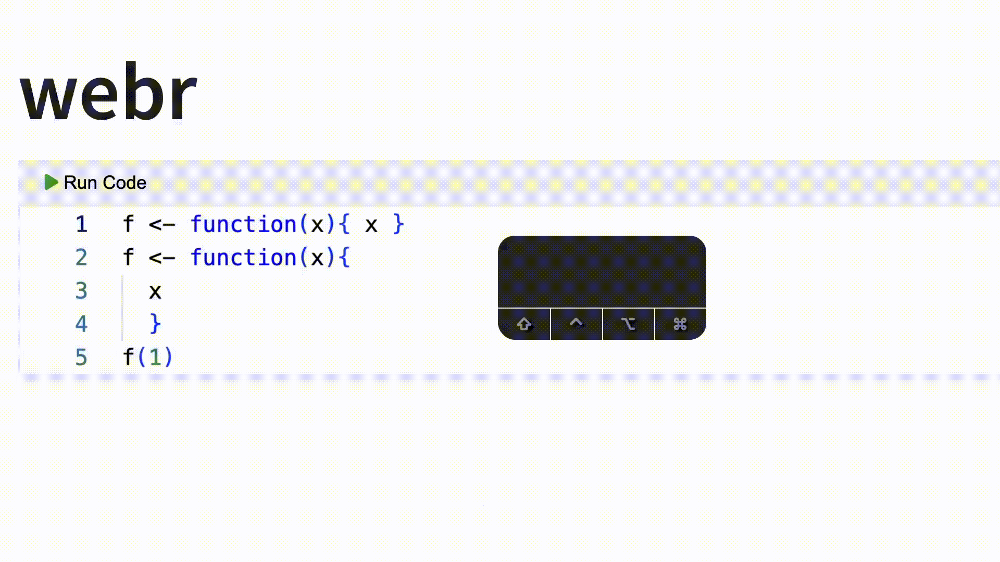
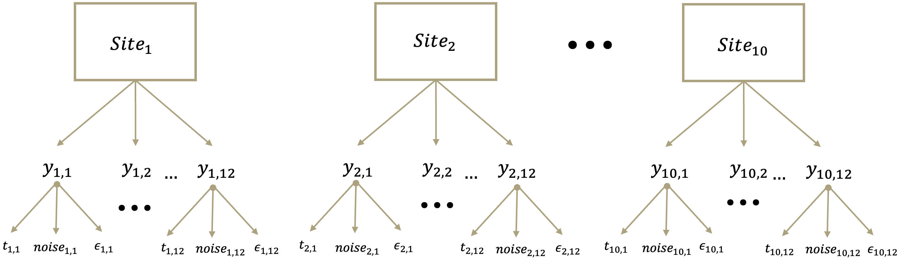
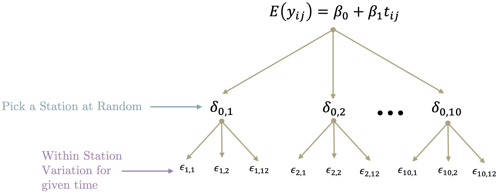
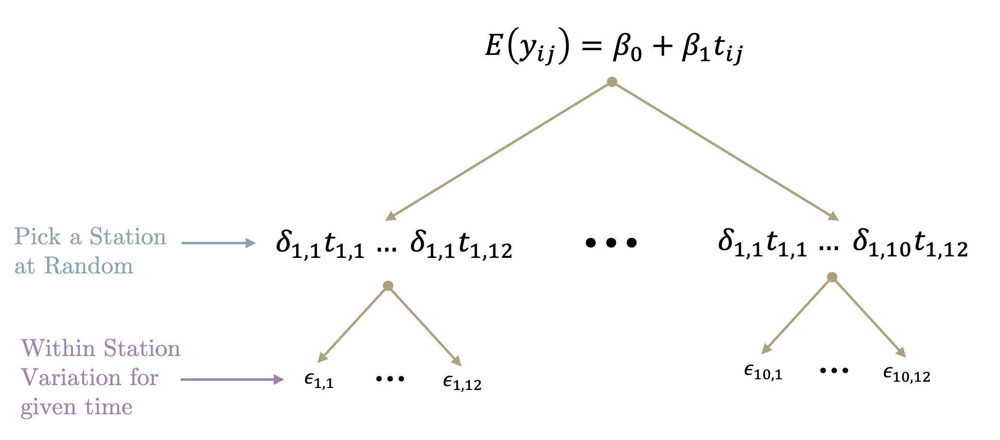
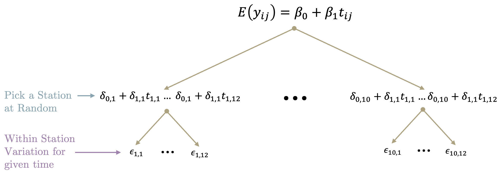
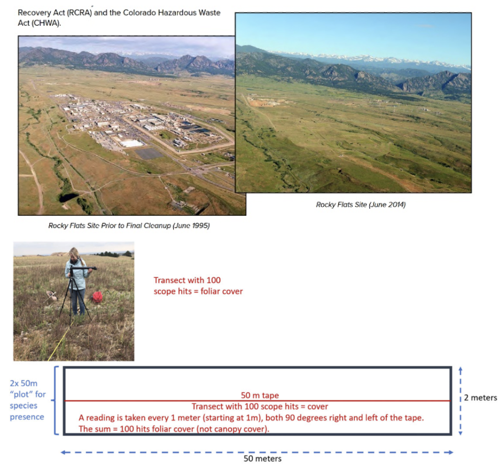

Primary Questions
- Have wood pigeons (Kukupa) increased in abundance over time?
- Since counts were observed at several stations in this study area, if there has been an increase in average abundance, how consistent is this effect across all stations?

Use cmd + enter to execute a line.
As of webR 0.2.3, webr does not support smart execution, so for multiline code highlight the entire section before hitting cmd + enter.
Scalar: A scalar is a single value. \[ x = 5 \]
Vector: A vector is a one-dimensional array of values. \[ \underline{v} = \begin{bmatrix} 1 \\ 2 \\ 3 \end{bmatrix} \]
Matrix: A matrix is a two-dimensional array of values. \[ A = \begin{bmatrix} 1 & 2 & 3 \\ 4 & 5 & 6 \\ 7 & 8 & 9 \end{bmatrix} \]
\[ \begin{array}{|c|c|c|} \hline & \text{Roman (known)} & \text{Greek (unknown)} \\ & \text{(Scalar, Vector, Matrix)} & \text{(Scalar, Vector, Matrix)} \\ \hline \text{Random} & \mathbb{X}, \underline{X}, \mathbb{X} & \Theta, \underline{\Theta}, \boldsymbol{\Theta} \\ \text{Fixed} & x, \underline{x}, X & \theta, \underline{\theta}, \boldsymbol{\theta} \\ \hline \end{array} \]
i.e., data (we observe it).
i.e., Population Parameters, \(\mu, \sigma,\) etc.
Not seen in this Workshop.
We will not go into the details for Bayesian Statistics in this workshop.
In summary:
Simple Linear Regression is a statistical method used to model the relationship between two continuous variables: one independent variable (predictor) and one dependent variable (response).
The goal is to find the best-fitting straight line (the regression line) that describes how the dependent variable changes as the independent variable changes.
The model is expressed as:
\[ \begin{gathered} Y_i = \beta_0 + \beta_1 X_i + \varepsilon_i \\ Y_i \sim N\left(\mu_i, \sigma^2\right) \end{gathered} \]
Where:
Our expression for the mean as can be expressed as…
\[ \begin{aligned} g\left(\mathbb{E}\left(y_i\right)\right) &= \beta_0 + \beta_1 X_{i1} \\ g\left(\mu\right) &= \beta_0 + \beta_1 X_{i1} \\ \mu &= \beta_0 + \beta_1 X_{i1} \\ \mu &= \eta \end{aligned} \]
From statistic theory \(\mathbb{E}\) is called the expectation operator, where the expectation of a random variable is the mean, \(\mu\). \(g()\) is called the link function. The link function relates the mean response to the linear predictor \(\eta\).
Design Matrix:
\[ X=\left[\begin{array}{cccc} 1 & 631.69 & 33.57 & 0.187 \\ 1 & 753.10 & 48.94 & 0.0246 \\ \vdots & \vdots & \vdots & \vdots \\ 1 & 435.02 & 37.43 & 0.226 \end{array}\right] \]
Where the column of 1’s, or \(\underline{1}\) is added to make the linear algebra work.
Response Vector and Vector of model Errors
\[ \underline{y}=\left[\begin{array}{c} 5.069 \\ 5.016 \\ \vdots \\ 4.380 \end{array}\right] \quad \underline{\epsilon}=\left[\begin{array}{c} \varepsilon_1 \\ \varepsilon_2 \\ \vdots \\ \varepsilon_{36} \end{array}\right] \]
\[ \begin{gathered} \begin{aligned} Y_i & =\beta_0+\beta_1 X_{i 1}+\ldots+\beta_k X_{i k}+\varepsilon_i \\ & =X \beta + \epsilon_i, ~i=1, \ldots, n \end{aligned} \\ Y_i \sim N\left(\mu_i, \sigma^2\right) \end{gathered} \]
Our Model assumptions, are mostly packed assumptions of the model errors. That is what we are assuming about the unknown population parameter \(\epsilon_i\), where \(\epsilon_i\) is the model error associated with \(i^{th}\) observation for our modeled response \(Y_i\).
\[ \varepsilon_i \overset{iid}{\sim} N\left(0, \sigma_{\varepsilon}^2\right) \]
a) Independently and Identically distributed (iid)
\[ \epsilon_i \color{#6A851D}{\overset{iid}{\sim}} N\left(0, \sigma_{\varepsilon}^2\right) \]
Independently Distributed: The experimental/observational units are independent of one another (ex. response per Sites/locations).
Identically Distributed: The natural variability in the response (i.e. species richness) is the same regardless of the response’s magnitude.
b) Distributed Gaussian/Normal \[ \varepsilon_i \overset{iid}{\sim} \color{#6A851D}{N}\left(0, \sigma_{\varepsilon}^2\right) \]
c) Mean Zero Model Errors \[ \varepsilon_i \overset{iid}{\sim} N\left(\color{#6A851D}{0}, \sigma_{\varepsilon}^2\right) \]
d) Constant Model Error Variance
\[ \epsilon_i \overset{iid}{\sim} N\left(0, \color{#6A851D}{\sigma_{\varepsilon}^2}\right) \] There is one theoretical value for the variance across all \(i\) observations.
e) Mean is a Linear Function of the Predictors
\[ \begin{aligned} g\left(\mathbb{E}\left(y_i\right)\right) &= \beta_0 + \beta_1 X_{i1} \\ g\left(\mu\right) &= \beta_0 + \beta_1 X_{i1} \\ \mu &= \beta_0 + \beta_1 X_{i1} \end{aligned} \]
When transitioning from the Simple Linear Model (SLM) to the Generalized Linear Model (GLM), several key assumptions of the SLM are relaxed or modified to accommodate a wider range of data types and distributions.
| Assumption | Simple Linear Model (SLM) | Generalized Linear Model (GLM) |
|---|---|---|
| Distribution of Errors | Errors follow a normal distribution. | Response follows a distribution from the exponential family. |
| Constant Error Variance | Error variance is constant (homoscedasticity). | Variance is allowed to vary as a function of the mean. |
| Mean Function | Mean of the response is a linear function of predictors. | Mean is linked to a linear predictor through a link function. |
| Model Errors | Errors have a mean of zero. | Explicit errors are not modeled in the same way. |
| Identically Distributed Errors | Errors are identically distributed. | Responses are not identically distributed if variance depends on the mean. |
| Independence of Observations | Observations are independent. | Observations are independent (this assumption is retained). |
The most common uses of GLM’s include logistic(binomial) regression for proportion/binary data, Poisson Regression for count data, and Gamma regression for skewed data.
In this context, logistic regression could be applied to model the probability of survival (the dependent variable) based on various independent variables such as passenger class, gender, age, and fare.
The Logit link function links the probability to the linear predictor:
\[ \begin{gathered} g\left(\mathbb{E}\left(Y_i\right)\right) = \text{logit}(\pi(\underline{x}_i)) = \log\left[\frac{\pi(\underline{x}_i)}{1 - \pi(\underline{x}_i)}\right] \\ \operatorname{logit}\left(\pi_i\right)=\underline{x}_i \boldsymbol{\beta} \\ \log\left[\frac{\pi(\underline{x}_i)}{1 - \pi(\underline{x}_i)}\right] =\underline{x}_i \boldsymbol{\beta} \\ Y_i \sim \text{Bin}(1, \pi_i) \end{gathered} \]
This is the logit link function, where:
Inverse logit function (linking the linear predictor to the expected probability): \[ \mu_i = \mathbb{E}[Y_i] = \pi(\underline{x}_i) = \frac{1}{1 + \exp\left(-\underline{x}_i^\top \boldsymbol{\beta}\right)} \]
For a 1 year increase in passengers age, the estimated estimated odds of a patient surviving decreases by 1.1 %. I am 95% confident that the interval (0.979, 0.999), captures the true ratio in the odds of a patient having survived the sinking of the titanic.
A Linear Mixed Model (LMM) is an extension of the standard linear regression model that allows for both fixed effects and random effects in the analysis. It is commonly used when data are grouped or clustered, and it accounts for both within-group and between-group variability.
Applications of LMM:
Westbrooke and Robinson (2009) reported on monitoring efforts of the Kukupa (or Wood Pigeon), New Zealand’s only native pigeon, in a study area exposed to intensive pest control.
Stations in the Bream Head area were selected at random and abundance was recorded at each of 10 stations for a period of 12 years; we will index i for site and j for year.
In addition to abundance, a measure of noise level was also recorded at each time point for each station. Data are provided in “Kukupa.csv”.
Most Stations start with very low abundances and then tend to increase over time.

\[ y_{i j}=\beta_0+\beta_1 t_{i j}+\varepsilon_{i j} \quad(i=1,2, \ldots, 10 ; \mathrm{j}=1,2, \ldots, 12) \]
\[ \begin{gathered} y_{i j}=\beta_0+\beta_1 t_{i j}+\delta_{0 i}+\varepsilon_{i j} \quad(i=1,2, \ldots, 10 ; \mathrm{j}=1,2, \ldots, 12) \\ \delta_i \overset{\text{iid}}{\sim} N\left(0, \sigma_\delta^2\right) \quad \varepsilon_{i j} \overset{\text{iid}}{\sim} N\left(0, \sigma_{\varepsilon}^2\right) \quad Y \sim N\left(X \underline{\beta}, Z G Z^{\prime}+R\right) \end{gathered} \]

\[ Response Model: \\ \begin{aligned} & y_{1,1}=\beta_0+\beta_1 t_{1,1}+\delta_{01}+\varepsilon_{1,1} \\ & \vdots \\ & y_{10,12}=\beta_0+\beta_1 t_{10,12}+\delta_{0,10}+\varepsilon_{10,12} \end{aligned} \]
summary(R_Int_mod)
## Linear mixed model fit by REML ['lmerMod']
## Formula: sqrt_abund ~ Scale_Yr + (1 | FStation)
## Data: Kukupa
##
## REML criterion at convergence: 69.9
##
## Scaled residuals:
## Min 1Q Median 3Q Max
## -2.4324 -0.7144 0.0347 0.6736 2.3048
##
## Random effects:
## Groups Name Variance Std.Dev.
## FStation (Intercept) 0.0121 0.110
## Residual 0.0888 0.298
## Number of obs: 120, groups: FStation, 10
##
## Fixed effects:
## Estimate Std. Error t value
## (Intercept) 0.15356 0.06190 2.48
## Scale_Yr 0.05245 0.00788 6.66
##
## Correlation of Fixed Effects:
## (Intr)
## Scale_Yr -0.700Illustrating Predictions
\[ \begin{aligned} &\begin{aligned} \sqrt{\hat{\mu}}= & \hat{\beta}_o+\hat{\beta}_y \text { year } \\ & =0.15356+0.05245 t_{1 j} \end{aligned}\\ &\begin{aligned} \sqrt{\hat{\mu}_{90}} & =\hat{\beta}_o+\hat{\beta}_1 \text { year }+\hat{\delta}_{0,90} \\ & =(0.15356+0.05479)+(0.05245) t_{1 j} \\ & =0.20835+0.05245 t_{1 j} \end{aligned} \end{aligned} \]
\[ \begin{gathered} y_{i j}=\beta_0+ (\beta_1 + \delta_{1i}) t_{i j} +\epsilon_{i j} \quad(i=1,2, \ldots, 10 ; \mathrm{j}=1,2, \ldots, 12)\\ \delta_i \overset{\text{iid}}{\sim} N\left(0, \sigma_\delta^2\right) \quad \varepsilon_{i j} \overset{\text{iid}}{\sim} N\left(0, \sigma_{\varepsilon}^2\right) \quad Y \sim N\left(X \underline{\beta}, Z G Z^{\prime}+R\right) \end{gathered} \]

\[ \begin{aligned} y_{i j} & =\beta_0 +\beta_1 t_{i j}+\delta_{1 i} t_{i j}+\varepsilon_{i j} \quad(i=1,2, \ldots, 10 ; \mathrm{j}=1,2, \ldots, 12) \\ & =\beta_0+\left(\beta_1+\delta_{1 i}\right) t_{i j}+\varepsilon_{i j} \end{aligned} \]
summary(R_Slope_only_mod)
## Linear mixed model fit by REML ['lmerMod']
## Formula: sqrt_abund ~ Scale_Yr + (0 + Scale_Yr | FStation)
## Data: Kukupa
##
## REML criterion at convergence: 67.1
##
## Scaled residuals:
## Min 1Q Median 3Q Max
## -2.0636 -0.7707 0.0103 0.7337 1.8888
##
## Random effects:
## Groups Name Variance Std.Dev.
## FStation Scale_Yr 0.000376 0.0194
## Residual 0.085363 0.2922
## Number of obs: 120, groups: FStation, 10
##
## Fixed effects:
## Estimate Std. Error t value
## (Intercept) 0.15356 0.05017 3.06
## Scale_Yr 0.05245 0.00987 5.32
##
## Correlation of Fixed Effects:
## (Intr)
## Scale_Yr -0.663Illustrating Predictions
\[ \begin{aligned} &\begin{aligned} \sqrt{\hat{\mu}}= & \hat{\beta}_o+\hat{\beta}_y \text { year } \\ & =0.15356+0.05245 t_{1 j} \end{aligned}\\ &\begin{aligned} \sqrt{\hat{\mu}_{90}} & =\hat{\beta}_o+\hat{\beta}_1 t_{1 j} + \hat{\delta}_{1,90} t_{1 j}\\ & =(0.15356)+(0.05245 + 0.02166014) t_{1 j} \\ & =0.15356 + 0.07411 t_{1 j} \end{aligned} \end{aligned} \]
Or if we want we can allow for a random intercept and a random slope.
\[ \begin{aligned} y_{i j} & =\beta_0+\delta_{0 i}+\beta_1 t_{i j}+\delta_{1 i} t_{i j}+\varepsilon_{i j} \quad(i=1,2, \ldots, 10 ; \mathrm{j}=1,2, \ldots, 12) \\ & =\left(\beta_0+\delta_{0 i}\right)+\left(\beta_1+\delta_{1 i}\right) t_{i j}+\varepsilon_{i j}\end{aligned} \]

summary(R_Int_and_Slope_mod)
## Linear mixed model fit by REML ['lmerMod']
## Formula: sqrt_abund ~ Scale_Yr + (Scale_Yr | FStation)
## Data: Kukupa
##
## REML criterion at convergence: 65.8
##
## Scaled residuals:
## Min 1Q Median 3Q Max
## -1.9484 -0.7265 -0.0023 0.7332 1.9540
##
## Random effects:
## Groups Name Variance Std.Dev. Corr
## FStation (Intercept) 0.016536 0.1286
## Scale_Yr 0.000681 0.0261 -0.66
## Residual 0.080733 0.2841
## Number of obs: 120, groups: FStation, 10
##
## Fixed effects:
## Estimate Std. Error t value
## (Intercept) 0.1536 0.0635 2.42
## Scale_Yr 0.0525 0.0112 4.70
##
## Correlation of Fixed Effects:
## (Intr)
## Scale_Yr -0.750ranef(R_Int_and_Slope_mod)
## $FStation
## (Intercept) Scale_Yr
## 81 0.1215110 -0.0278495
## 82 0.1344547 -0.0042853
## 83 0.0010878 -0.0176100
## 84 -0.0748525 -0.0144783
## 85 0.0241642 -0.0043742
## 86 0.0207353 0.0197820
## 87 -0.0743896 0.0103616
## 88 -0.0239548 0.0119392
## 89 -0.0045661 -0.0119910
## 90 -0.1241901 0.0385055
##
## with conditional variances for "FStation"Illustrating Predictions
\[ \begin{aligned} &\begin{aligned} \sqrt{\hat{\mu}}= & \hat{\beta}_0+\hat{\beta}_1 t_{1 j} \\ & =0.15356+0.05245 t_{1 j} \end{aligned}\\ &\begin{aligned} \sqrt{\hat{\mu}_{90}} & =\hat{\beta}_o+\hat{\beta}_I t_{1 j} +\hat{\delta}_{0,90}+\hat{\delta}_{1,90} t_{1 j} \\ & =(0.15356-0.12419)+(0.05245+0.0385) t_{1 j} \\ & =0.02937 + 0.09095 t_{1 j} \end{aligned} \end{aligned} \]
\[ \boldsymbol{\eta}=\mathbf{X} \boldsymbol{\beta}+\mathbf{Z} \boldsymbol{\delta} \]
\[ \begin{gathered} g\left(~.\right)=\text { link function } \\ h\left(~.\right)=g^{-1}\left(~.\right)=\text { inverse link function } \\ \mathbf{g}(E(\mathbf{y}))=\boldsymbol{\eta} \end{gathered} \]

\[ \begin{gathered} Y_i \sim \operatorname{Bin}\left(n_i, \pi_i\right) \\ \operatorname{logit}\left(\pi_i\right)=\mathbf{X}_i \underline{\beta}+\mathbf{Z}_i \delta_i \end{gathered} \]
\[ \underline{\beta} = \begin{bmatrix} \beta_0 \\ \beta_1 \\ \beta_2 \\ \beta_3 \\ \beta_4 \\ \beta_5 \\ \end{bmatrix} \]
Interpreting the coefficients from GLMM with a proportion as the response and assuming a binomial distribution makes the coefficients difficult. So we will focus on how to fit the models in code, perform model selection, and plot the bootstrapped conditional predictions.
library(lme4)
forbs <- read.csv("forbs.csv")
forbs$sc_year <- as.factor(forbs$sc_year)
levels(forbs$sc_year) <- as.character(0:5)
R.abnd.forb <- with(forbs,cbind(sumcov, totcov - sumcov))
forbs$R.abnd.forb <- R.abnd.forb
# ci.cs (logistic regression)
m0 <- glm(R.abnd.forb ~ sc_year, family = binomial(link = "logit"),
data=forbs)
# ri.cs
m1 <- glmer(R.abnd.forb ~ sc_year + (1|TRANSECT), family = binomial(link = "logit"),
data=forbs)
# ri.rs(ind)
m2 <- glmer(R.abnd.forb ~ sc_year + (1|TRANSECT)+(0+sc_year|TRANSECT),
family = binomial(link = "logit"),data=forbs)
# ci.rs
m3 <- glmer(R.abnd.forb ~ sc_year + (0+sc_year|TRANSECT),
family = binomial(link = "logit"),data=forbs)
# ri.rs(cor)
m4 <- glmer(R.abnd.forb ~ sc_year + (1+sc_year|TRANSECT),
family = binomial(link = "logit"),data=forbs)Chi squared test for comparing correlated and Uncorrelated Slopes
\[ \begin{aligned} H_0 &: \text{The full Model is not different than the reduced model} \\ H_A &: \text{The reduced Model is different than the reduced model} \end{aligned} \]
From AIC we see that correlated random intercepts and random slopes is the preferred model as well as being supported by our test between m2 (independent random intercepts and random slopes) and m4 (correlated random intercepts and random slopes) with a p-value small than our \(\alpha\) of 0.05.
Now, considering ’YEAR’s as categorical, we will find the 95% boot‐strapped confidence intervals for the relative proportion of forbs in each year on the refuge.
library(tictoc)
library(ggplot2)
toPropMarg <- function(mod){
X <- model.matrix(mod); X <- X[,1:ncol(X)]
beta <- as.matrix(fixef(mod))
(1/(1+exp(-X %*% beta)))[1:6] # marginals
}
forbs$sc_year <- as.factor(forbs$sc_year)
levels(forbs$sc_year) <- as.character(0:5)
# ri.cs
m1 <- glmer(R.abnd.forb ~ sc_year + (1|TRANSECT), family = binomial(link = "logit"),
data=forbs)
tic() # timing run time
bb <- bootMer(m1, FUN=toPropMarg, nsim = 200,
ncpus = parallel::detectCores() - 1, parallel = "multicore")
toc()4.466 sec elapsedlci <- apply(bb$t, 2, quantile, 0.025)
uci <- apply(bb$t, 2, quantile, 0.975)
med <- apply(bb$t, 2, quantile, 0.5)
sdev <- apply(bb$t, 2, sd)
ci_df <- data.frame(
Year = as.character(unique(forbs$YEAR)),
est = med, sd = sdev, Lower = lci,Upper = uci)
ggplot(ci_df, aes(x = Year, ymin = Lower, ymax = Upper)) +
geom_errorbar(width = 0.2) + # Adjust the width as needed
theme_minimal() +
labs(title = "95% Conditional Bootstrapped Confidence Intervals for Each Year",
x = "Year",
y = "Proportion of Forbs")